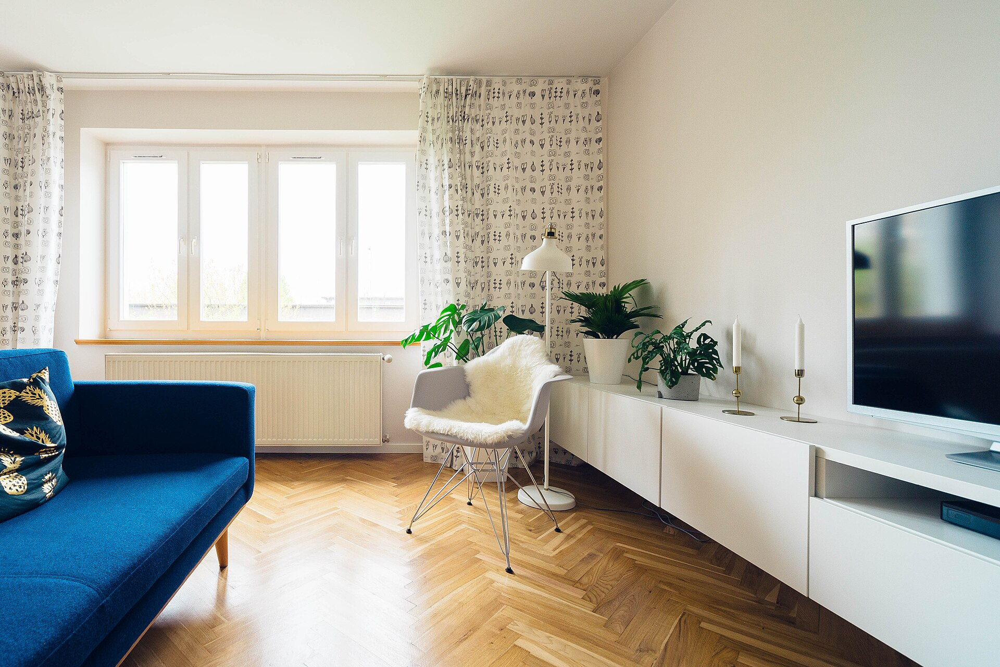

강산인테리어는 유행을 따라가지 않습니다. 이 집에 사는 사람의 동선과 습관을 먼저 읽고, 그 다음에 마감재와 가구를 정합니다. 보기 좋은 사진보다 오래 머물러도 편안한 공간을 먼저 생각합니다.
강남 논현동의 작은 사무실에서 시작해, 지금까지 서울과 수도권의 아파트, 빌라, 상업 공간 230여 곳의 리모델링을 함께했습니다.
작업 방식 보기최근 완성한 공간들
거실과 주방을 잇는 동선, 채광, 수납까지. 강산인테리어가 최근 마무리한 프로젝트 중 다섯 곳을 소개합니다.


작업 방식
네 번의 대화로 공간을 완성합니다. 각 단계마다 결정한 내용을 도면과 견적으로 바로 확인할 수 있습니다.
상담
현장 실측과 생활 방식 인터뷰로 시작합니다.
설계
동선과 수납을 먼저 잡고 마감재를 정합니다.
시공
전담 현장 관리자가 매주 진행 상황을 공유합니다.
스타일링
가구와 조명까지 완성해 입주 당일 바로 지냅니다.
논현동 한 자리에서 이어온 시간
완료한 주거 · 상업 공간 프로젝트
기존 고객의 재의뢰 및 소개 비중
이사 오고 나서 가장 많이 들은 말은 집이 넓어진 것 같다는 거였어요. 평수는 그대로인데 말이죠.
상담 때 그려주신 도면이랑 실제 완성된 모습이 거의 똑같아서 놀랐어요.
공사 내내 진행 상황을 사진으로 보내주셔서 집을 비운 3주가 하나도 불안하지 않았어요.
욕실 하나 바꿨을 뿐인데 아침에 씻는 시간이 하루 중 제일 좋아졌어요.
손님들이 사진부터 찍고 자리에 앉으세요. 매출보다 그게 더 뿌듯하더라고요.
예산은 뻔한데 자재는 타협하지 않으셔서, 그 안에서 최선을 찾아주셨어요.
디테일이 완성도를 만듭니다
마감재 하나, 손잡이 하나까지 직접 골라 시공합니다.
마블 월 마감
펜던트 조명
그린 포인트
지금 상담을 시작하세요
실측 상담은 방문 기준 약 40분, 견적은 상담 후 3영업일 이내 전달드립니다.